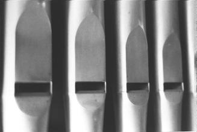

| |
| No
| Note
| Jeu
| Hauteur
|
pied
(A) |
écusson
(B) |
| 1 |
Bb 1 |
M8' |
620.0 |
160.0 |
| 2 |
F# 1 |
M8' |
530.0 |
194.0 |
| 3 |
E 1 |
M8' |
410.0 |
210.0 |
| 4 |
G# 1 |
M8' |
530.0 |
175.0 |
| 5 |
C 2 |
M8' |
620.0 |
145.0 |
| |
| 6 |
Eb |
Muet |
270.0 |
84.0 |
| 7 |
C# |
Muet |
270.0 |
92.0 |
| 8 |
B |
Muet |
270.0 |
100.0 |
| 9 |
A |
Muet |
270.0 |
110.0 |
| 10 |
G# 1 |
P4' |
270.0 |
115.0 |
| 11 |
Bb 1 |
P4' |
270.0 |
107.0 |
| 12 |
C 2 |
P4' |
270.0 |
100.0 |
| 13 |
D 2 |
P4' |
270.0 |
92.0 |
| 14 |
E 2 |
P4' |
270.0 |
82.0 |
| |
| 15 |
C 4 |
M8' |
580.0 |
58.0 |
| 16 |
Bb 3 |
M8' |
555.0 |
63.0 |
| 17 |
G# 3 |
M8' |
525.0 |
67.0 |
| 18 |
F# 3 |
M8' |
505.0 |
74.0 |
| 19 |
E 3 |
M8' |
485.0 |
81.0 |
| 20 |
D 3 |
M8' |
460.0 |
88.0 |
| 21 |
C 3 |
M8' |
435.0 |
95.0 |
| 22 |
Bb 2 |
M8' |
415.0 |
107.0 |
| 23 |
G# 2 |
M8' |
390.0 |
115.0 |
| 24 |
F# 2 |
M8' |
365.0 |
130.0 |
| 25 |
E 2 |
M8' |
335.0 |
140.0 |
| 26 |
D 2 |
M8' |
320.0 |
152.0 |
| 27 |
Eb 2 |
M8' |
340.0 |
145.0 |
| 28 |
F 2 |
M8' |
365.0 |
134.0 |
| 29 |
G 2 |
M8' |
385.0 |
123.0 |
| 30 |
A 2 |
M8' |
415.0 |
110.0 |
| 31 |
B 2 |
M8' |
435.0 |
100.0 |
| 32 |
C# 3 |
M8' |
460.0 |
92.0 |
| 33 |
Eb 3 |
M8' |
485.0 |
83.0 |
| 34 |
F 3 |
M8' |
510.0 |
76.0 |
| 35 |
G 3 |
M8' |
530.0 |
71.0 |
| 36 |
A 3 |
M8' |
555.0 |
65.0 |
| 37 |
B 3 |
M8' |
575.0 |
60.0 |
| |
| 38 |
Eb 2 |
P4' |
270.0 |
85.0 |
| 39 |
C# 2 |
P4' |
270.0 |
95.0 |
| 40 |
B 1 |
P4' |
270.0 |
102.0 |
| 41 |
A 1 |
P4' |
270.0 |
112.0 |
| 42 |
E |
Muet |
270.0 |
115.0 |
| 43 |
D |
Muet |
270.0 |
108.0 |
| 44 |
C |
Muet |
270.0 |
98.0 |
| 45 |
Bb |
Muet |
270.0 |
89.0 |
| 46 |
G# |
Muet |
270.0 |
83.0 |
| |
| 47 |
C# 2 |
M8' |
620.0 |
160.0 |
| 48 |
A 1 |
M8' |
535.0 |
195.0 |
| 49 |
F 1 |
M8' |
415.0 |
233.0 |
| 50 |
G 1 |
M8' |
530.0 |
212.0 |
| 51 |
B 1 |
M8' |
625.0 |
179.0 |
|
|
| |
|  |
| Écusson de façade. |
| |
|
|
Type des
pattes
d'accord. |
La Montre dans sa « boite ». |
|
| |
Hauteurs des croissants
(Mesures prises à partir de la chape).
|
| Tourelle côté C et C# : |
1855.0 |
| Petites plates-faces côté C et C# : |
920.0 |
| Plates-faces centrale : |
1000.0 |
Épaisseurs |
|---|
| Chapes gravées : |
55.0 |
| Croissants : |
17.0 |
|